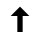

<!doctype html>
<title>Illusion</title>

<!-- https://thumbs.gfycat.com/EnchantedClearcutBlackfish-mobile.mp4 -->

<style>
  :root {
    --speed: 0.75s;
    --cycle-time: calc( 5* var(--speed));
    --size: 5vw;
    --scale: 4;
    --arrow-scale: 2;
    --extra-border: 0.99;
  }

  * {
    margin: 0;
    padding: 0;
  }

  body {
    background: #999;
    width: 100vw;
    height: 100vh;
    overflow: hidden;
    /* filter: blur(2px); */
  }

  section {
    position: absolute;
    top: 0;
    bottom: 0;
    left: 0;
    right: 0;
    display: flex;
    flex-direction: row;
    justify-content: space-around;
    align-items: center;
    animation: ring-translation var(--cycle-time) linear infinite;
  }

  #circles1 {
    --rescale: calc(var(--scale) / var(--extra-border));
    --rescale: var(--scale);
    --x: 45deg;
    --extra-rotate: var(--x);
    transform: translate(-1px,0);
    --dir: 2px;
  }

  #circles2 {
    --rescale: calc(var(--scale) * var(--extra-border));
    --rescale: var(--scale);
    --x: -45deg;
    --extra-rotate: var(--x);
    transform: translate(1px,0);
    --dir: -2px;
  }

  #circles1 div:first-of-type,
  #circles2 div:first-of-type {
    --extra-rotate: calc(-1 * var(--x));
  }

  #circles3 {
    --rescale: var(--scale);
    --extra-rotate: 0deg;
    --dir: 0;
  }

  div {
    display: block;
    border: var(--size) solid;
    border-color: #4444DD #FFDD44;
    width: calc(var(--size) * var(--rescale));
    height: calc(var(--size) * var(--rescale));
    border-radius: 100%;
    animation: ring-rotation var(--speed) linear infinite;
  }

  #arrows img {
    animation: arrow-rotation var(--cycle-time) linear infinite;
    width: calc(var(--size) * var(--arrow-scale));
    --extraScale: scale(1,1);
  }

  #arrows img:first-of-type {
    --extraScale: scale(-1,-1);
  }


  @keyframes ring-rotation {
    from {
      transform: rotate(calc(0deg + var(--extra-rotate)));
    }
    to {
      transform: rotate(calc(360deg + var(--extra-rotate)));
    }
  }

  @keyframes ring-translation {
    0%, 20% {
      transform: translate(var(--dir),0);
    }
    25%, 45% {
      transform: translate(0,var(--dir));
    }
    50%, 70% {
      transform: translate(calc(-1 * var(--dir)),0);
    }
    75%, 95% {
      transform: translate(0,calc(-1 * var(--dir)));
    }
  }

  @keyframes arrow-rotation {
    0%, 20% {
      transform: var(--extraScale) rotate(-90deg) rotate(0deg);
    }
    25%, 45% {
      transform: var(--extraScale) rotate(-90deg) rotate(90deg);
    }
    50%, 70% {
      transform: var(--extraScale) rotate(-90deg) rotate(180deg);
    }
    75%, 95% {
      transform: var(--extraScale) rotate(-90deg) rotate(270deg);
    }
    100% {
      transform: var(--extraScale) rotate(-90deg) rotate(360deg);
    }
  }

</style>

<section id="circles1"><div></div><div></div></section>
<section id="circles2"><div></div><div></div></section>
<section id="circles3"><div></div><div></div></section>
<section id="arrows"></section>


